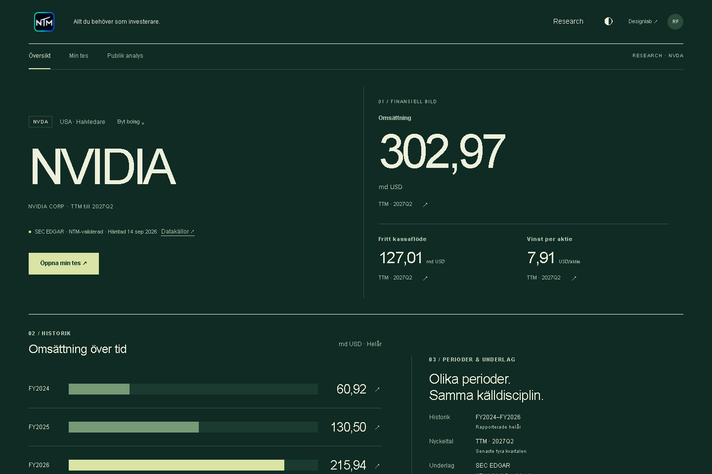

NTM / Rendered evidence
Pass 1 → critique → pass 2. Images open at their original viewport resolution.
PASS-2
Direction A
Direction B
Direction C
c-overview-1440-dark
c-overview-1440-lightc-overview-390-dark-fullc-overview-390-darkc-overview-390-light-fullc-overview-390-lightc-public-1440-darkc-public-1440-lightc-public-390-dark-fullc-public-390-darkc-public-390-light-fullc-public-390-lightc-public-data-1440-darkc-public-data-1440-lightc-public-data-390-darkc-public-data-390-lightc-source-390-lightc-thesis-1440-darkc-thesis-1440-lightc-thesis-390-dark-fullc-thesis-390-darkc-thesis-390-light-fullc-thesis-390-lightc-thesis-deep-1440-darkc-thesis-deep-1440-lightc-thesis-deep-390-darkc-thesis-deep-390-lightPASS-1
Direction A
a-overview-1440-darka-overview-1440-lighta-overview-390-darka-overview-390-lighta-public-1440-darka-public-1440-lighta-public-390-darka-public-390-lighta-public-data-1440-darka-public-data-1440-lighta-public-data-390-darka-public-data-390-lighta-source-390-lighta-thesis-1440-darka-thesis-1440-lighta-thesis-390-darka-thesis-390-lighta-thesis-deep-1440-darka-thesis-deep-1440-lighta-thesis-deep-390-darka-thesis-deep-390-lightDirection B
b-overview-1440-darkb-overview-1440-lightb-overview-390-darkb-overview-390-lightb-public-1440-darkb-public-1440-lightb-public-390-darkb-public-390-lightb-public-data-1440-darkb-public-data-1440-lightb-public-data-390-darkb-public-data-390-lightb-source-390-lightb-thesis-1440-darkb-thesis-1440-lightb-thesis-390-darkb-thesis-390-lightb-thesis-deep-1440-darkb-thesis-deep-1440-lightb-thesis-deep-390-darkb-thesis-deep-390-lightDirection C
c-overview-1440-darkc-overview-1440-lightc-overview-390-darkc-overview-390-lightc-public-1440-darkc-public-1440-lightc-public-390-darkc-public-390-lightc-public-data-1440-darkc-public-data-1440-lightc-public-data-390-darkc-public-data-390-lightc-source-390-lightc-thesis-1440-darkc-thesis-1440-lightc-thesis-390-darkc-thesis-390-lightc-thesis-deep-1440-darkc-thesis-deep-1440-lightc-thesis-deep-390-darkc-thesis-deep-390-light